Hi all,
Back to back guest blogs this month. Thank you to the 12 individuals that have got involved with sharing their expertise this year - I love that I have both the opportunity and privilege to host them, and no doubt as a community we appreciate the efforts that you go to create them.
This week, we change our attention to all things maps, and that means I had to turn to Dennis Kao.
CJ: Dennis, what a delight to have you join the site to be able to talk through cartography, map making and all things Tableau. Many of you will know Dennis from the community for his impact as a Tableau Public Ambassador, multiple vizzie award winner as well as co-leading the HeathTUG and EduVizzers. More recently I’ve been really impressed with Dennis’ commitment to the array of different maps he has been creating in Tableau.C: Before we dive in, where does the passion for maps come from? Of your 150+ Public vizzes it looks like they’ve grown in frequency especially the past year? Was this from doing challenges like the 30DaysMapChallenge?D: Not entirely sure… Maps have always had a significant place in my life. I just think maps are so cool…As a kid, I remember spending hours combing through my dad’s National Geographic collection. I also grew up and started driving during a time when you had to read a paper map to get anywhere. Every year, I looked forward to getting the new Thomas Bros guide – which was a widely-used atlas in Los Angeles at the time. With a paper map, figuring out how to get somewhere always felt like a challenge… a puzzle.In my work, I’ve seen firsthand the power of maps and how they’re designed (and what information they include or leave out) have a significant impact on people and communities. As a social worker, we’re trained to think about the health and well-being of a person in the context of their environment. For example, depending on where a person lives, there may be more or less available healthcare services within a reasonable walking or driving distance. In this case, I think maps could serve as a useful tool to examine and visualize the geographic gaps in the health system. It’s only been in the past few years, since discovering Tableau, when I’ve focused more on the artistic side of mapmaking. And I’m absolutely loving the ride! This journey has really brought out a creative side that I never thought I had. This past year, I’ve been really trying to explore mapmaking design in Tableau Public… and yes, creating 20-30 maps during the #30DayMapChallenge each November.CJ: You can view Dennis round-up here. Here are a few of my favourites,
Day 3: The United Squares
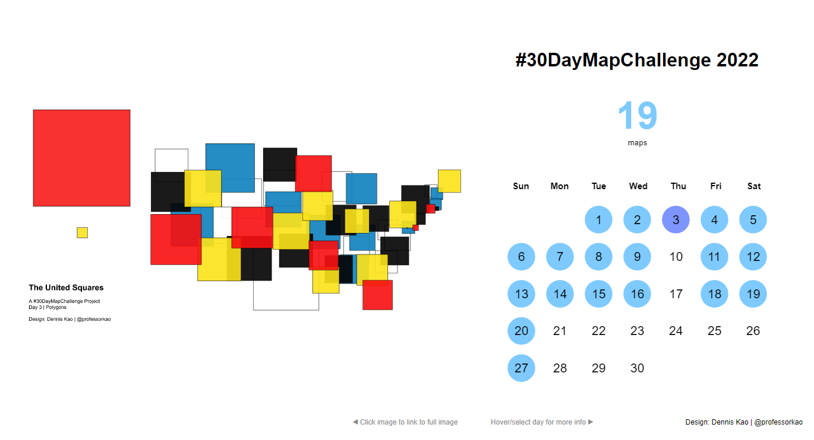
Day 7: Redlining in Los Angeles
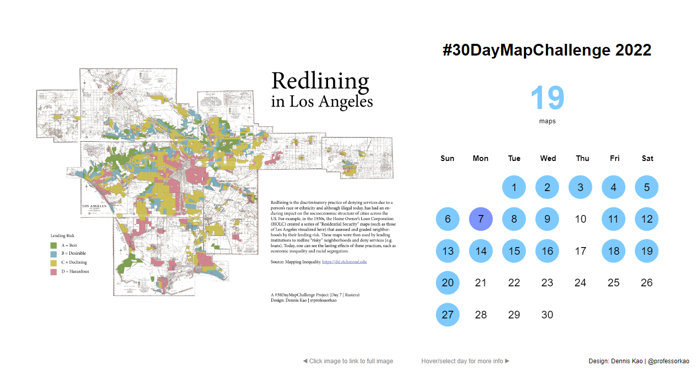 Day 13: Jeju Island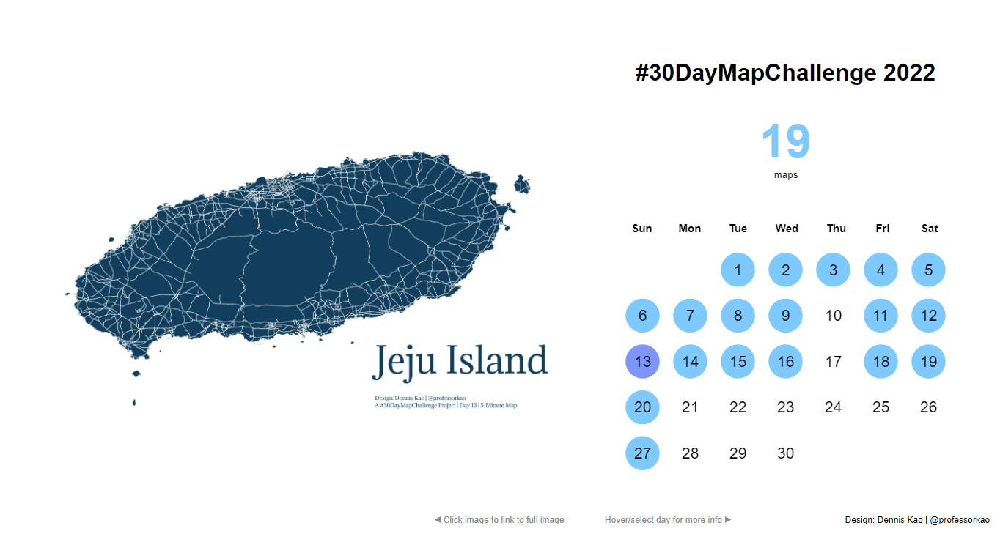
C: What advantages come with learning multiple tools, like QGIS and other tools that can become compatible with Tableau?D: Prior to discovering Tableau, I spent over 10 years mapping and conducting spatial analysis. I was initially trained using ArcGIS, but now mostly use QGIS (because it’s free and available for the Mac). And while Tableau continues to up its spatial & mapping game, I do think there are still advantages in having GIS in your toolkit.First and foremost, GIS software, such as QGIS or ArcGIS, are designed specifically to deal with the unique properties of spatial data. So, from adding layers to exploring the data to editing and creating new features, I believe the process is just easier and faster. They’re both designed as point-and-click applications and thus, have a lower learning curve. But you also have the option to use coding, e.g. Python, if preferred. GIS software provides a bunch of different tools that allow you to clean or edit the data and create new spatial features. Now, I almost exclusively use Tableau Public to visualize my final maps, but typically use QGIS to clean and prepare the data. At the beginning of this year, I started #RandomQGIStoTableauStuff to explore and share some of these features, e.g. grids or water lines. The key advantage – in my mind – for creating these features in GIS is that they’re hard-coded to the actual geography. So, when you bring them into Tableau, they function just like any other other spatial data file (e.g. shapefiles). For example, a grid is essentially a series of polygons that you can layer them, filter, zoom in and out, select, symbolize with color, label, and visualize in the same way you might do so with a map of the United States or Canada. In one of my visualizations, I paid homage to “The Thomas Guide” and used a grid created in QGIS to allow the reader to click and zoom in specific areas of Los Angeles County.
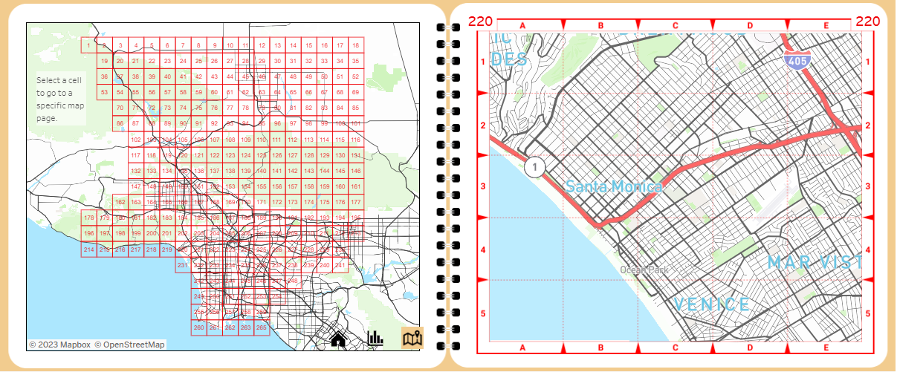
C: For those looking for map viz inspo, what are some of your favourites be it from Tableau or further afield?I’m continually inspired by the #DataFam, but a few that immediately come to mind are: Wendy Shijia (@ShijiaWendy), Naresh Suglani (@SuglaniNaresh), and Damola Ladipo (@AdedamolaLadipo). . I also love the earlier stuff by Ken Flerlage (@flerlagekr) and Adam McCann (@adamemccann). I would also encourage you to check out the 39 maps that folks did for the #IronQuest challenge back in March 2020, which focused on maps, here.When I was first making the transition from GIS to Tableau, I found Marc Reid (@marcreid) particularly helpful. Finally, my approach has also been informed by the work of Sarah Battersby, who wrote extensively about QGIS and Tableau.And be sure to follow the #30DayMapChallenge that occurs in November…and be prepared to be absolutely blown away by some beautiful mapmaking.CJ: Now you know I’m a huge fan of your typefully and the post you put up around 10 things you can do in QGIS to enhance your maps in Tableau. Could you give us a beginner’s guide to how you created your water lines visual?
D: Back in January of this year, I started a series called #RandomQGIStoTableau, which I describe - over a thread of 4-5 short tweets - how to create spatial features in QGIS that can be used to enhance your maps in Tableau Public. One of my earliest posts focused on creating “water lines”, And thanks to CJ, I have more space in which I can actually write complete sentences, so I’m going to describe the process in a bit more detail.
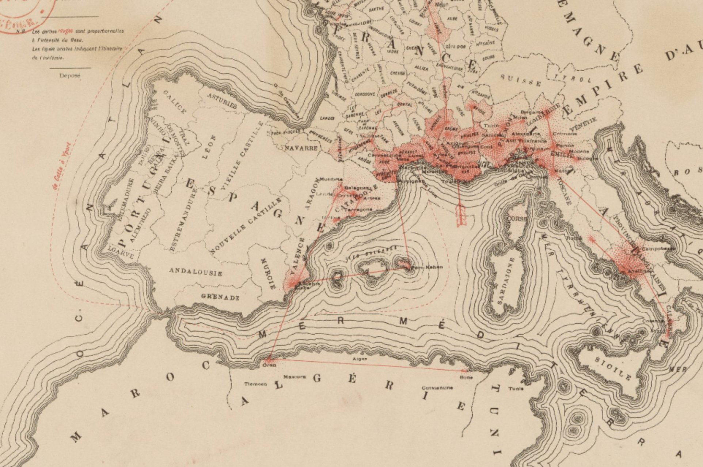
Have I mentioned that I love maps? The inspiration for this came from looking at old maps, such as this one. I later came across Olivia Vane’s writings on water lines.So, the general approach is use QGIS to create a shapefile that has the desired geographic feature. Then we simply have to bring in and add it as a map layer in Tableau. In the case of water lines, we can use the BUFFER tool to create a series of polygons that surround the target geography at different distances. Tableau also has a buffer function, BUFFER(), but as far as I know, you can only create buffers around points right now (hint, hint…). The first step is to add your target geography. For this example, I will be starting with a shapefile of Japan (Source: Humanitarian Data Exchange).
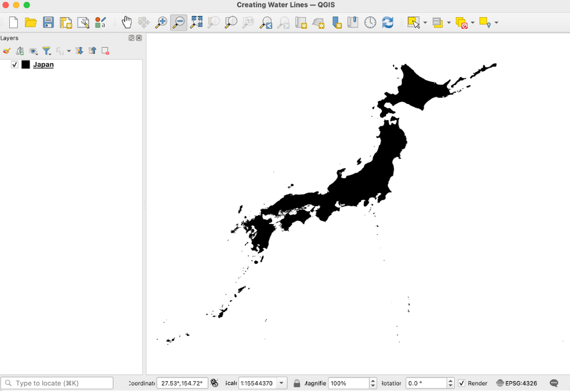
To create our first buffer, select the BUFFER tool either through the menus (Vector → Geoprocessing Tools) or the Processing Toolbox (under Vector Geometry).
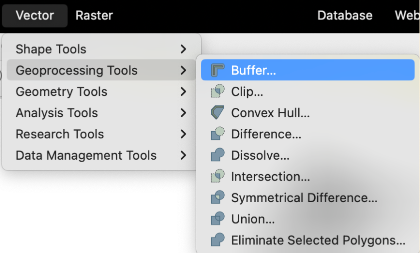
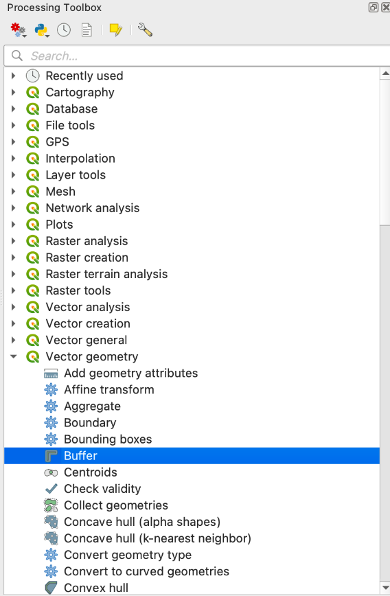
In the Buffer dialog window, select your target geography in the “Input Layer” field and input your desired distance in the “Distance” field. You may need to play around with the values. In this case, I wanted to mimic the ripple effect, so I increased the distance slightly with each buffer. Repeat this step until you get the desired number of buffers. For example, I decided to go with six buffers at the following distances: 0.1, 0.2, 0.4, 0.7, 1.0, and 1.3 degrees.
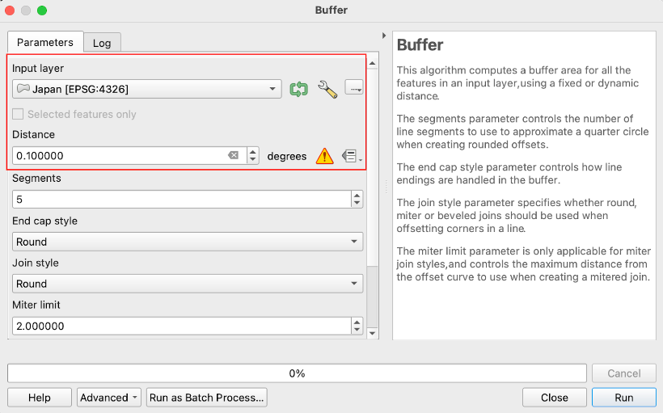
The result is 6 polygon feature layers that surround the geography of Japan at varying distances. A few important things to note here. First, buffers are essentially polygons so you can play with the fill and line (border) colors to get the desired effect. Second, if you have a water body as your starting geography, you will want to use negative values for your distances to obtain internal buffers. For example, in my earlier post, I started with the Great Lakes.
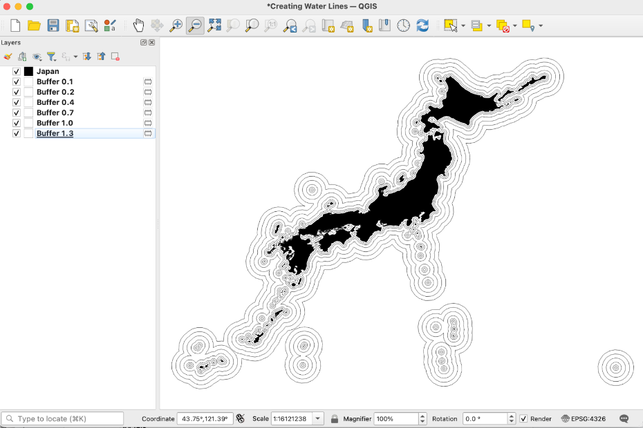
At this point, you have two options. On one hand, you can save each of these layers as a shapefile to be used in Tableau by right-clicking on each layer and selecting “Make Permanent”. While it’s a bit more trouble to bring in the various files into Tableau, keeping them as separate files will allow you to manipulate each buffer (formatting, color, opacity, etc.) as separate map layers.
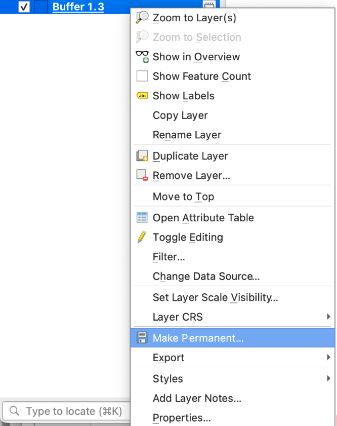
On the other hand, you may want to first use the Merge Vector Layers tool to merge the layers into a single layer that you can then save to be used in Tableau. And if we look at the attribute table, you will notice a “Layer” field that has the name of each layer. This will streamline the process of bringing in the data, but you may still want to separate each buffer as separate map layers for formatting purposes. You would then have to create a series of calculations, such as the following: IF [Layer] = "Buffer 0.1" THEN [Geometry] END
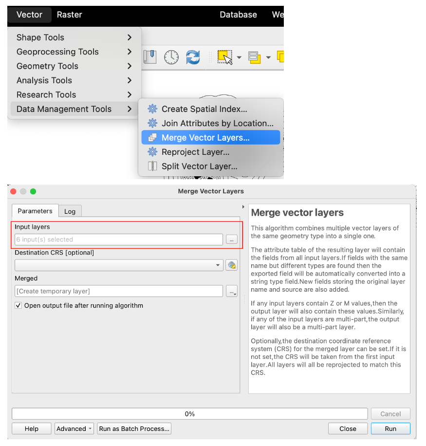
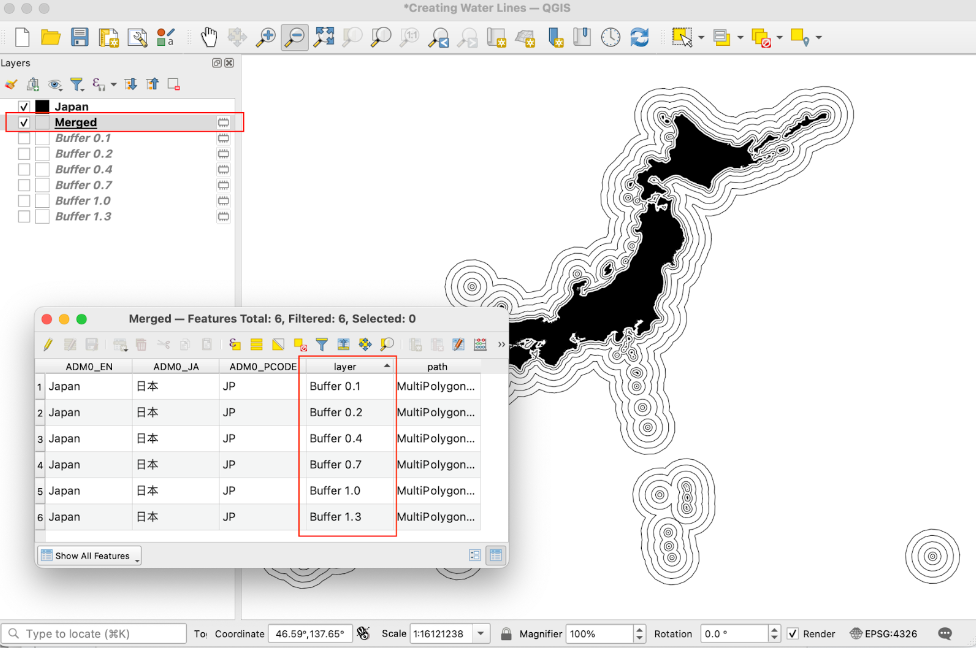
Now you’re ready to bring-in the data and visualize the water lines in Tableau Public. If you need more information about working with map layers, Marc Reid has a great article here
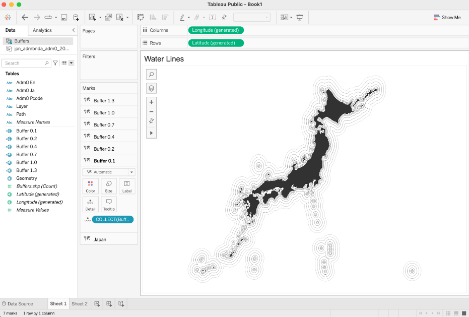
Above is the different buffer layers I've used within my visualisation! I hope you found this helpful! Thanks CJ for the opportunity to share some thoughts. CJ Round-Up:
I always love to see how individuals start to mix different tools to produce something quite spectacular. Dennis does just this with his use of QGIS & Tableau. Be sure to connect with Dennis on Twitter, here.LOGGING OFF,CJ